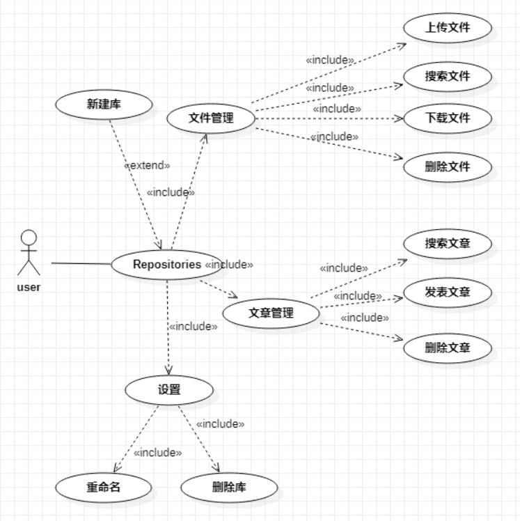
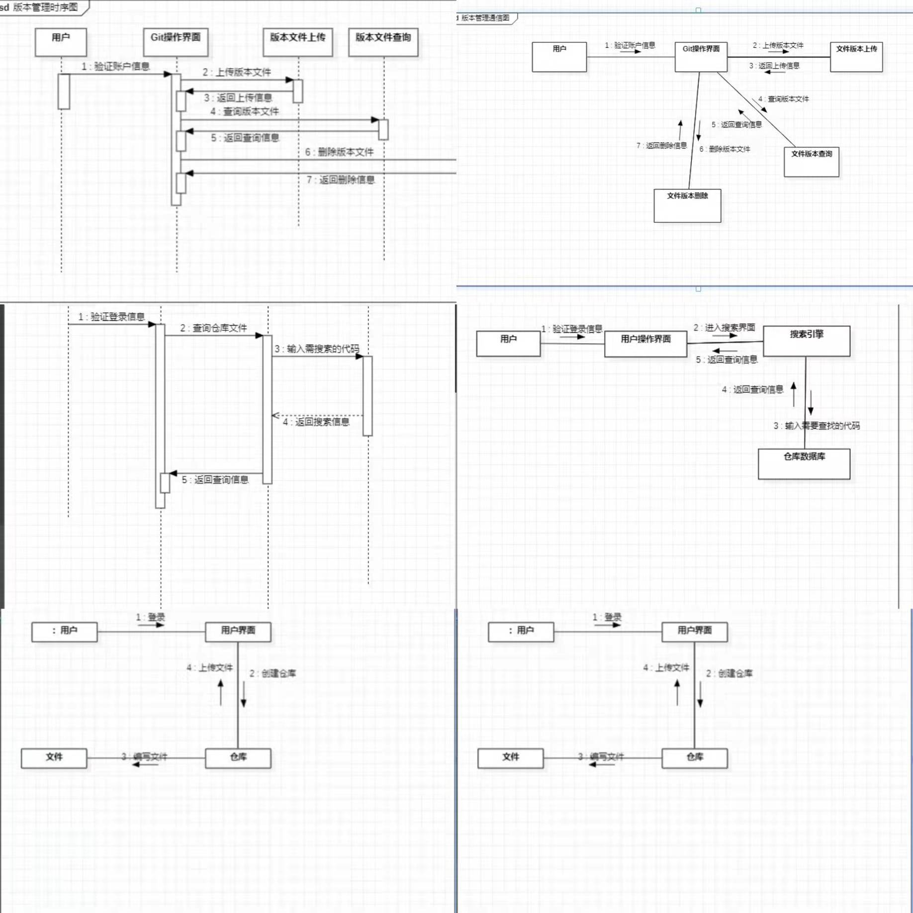

二．用例说明
用例名称 新建Repositories(仓库)功能实现
用例编号 UML01
参与者 User
用例描述 该用例描述一个用户新建库
触发器 当仓库被新建时,用例触发
前置条件 新仓库用户完成登录且点击新建仓库
后置条件 仓库命名完成且关键信息填写完成,系统提示完成新建;否则提示新建仓库失败,返回异常位置,重新操作
基本事件流 1.User登录；
2.User点击创建仓库；
3.User填入仓库信息；
4.User提交新建仓库请求；
5.系统验证新建仓库信息合法性后做出响应；
6.系统对仓库有无关键信息做出检验；
7.系统检验完成，提示用户新建仓库完成。
扩展事件流 A-5 如果仓库信息不合法，系统提示仓库信息不合法并返回重新操作
A-6 如果仓库缺少部分或全部关键信息，系统提示仓库关键信息未填完整并返回重新操作
结论 当User收到系统发送的任务运行成功或者其他异常信息时，用例结束
数据需求 D-3 仓库信息包括仓库名、仓库说明、仓库地址和仓库关键信息等
业务规则 B-1只有当仓库新建完成后才可以执行后面操作
用例名称 文件管理功能实现
用例编号 UML02
参与者 User
用例描述 该用例描述User上传文件、搜索文件、下载文件和删除文件功能。
触发器 当点击文件管理时触发。
前置条件 User必须登录成功。
后置条件 操作文件完成，系统提示操作完成并返回操作内容；否则提示操作文件失败，返回异常重新操作。
基本事件流 1.在主页面，User点击要操作的仓库；
2.User点击文件操作管理，进入文件界面；
3.User点击上传文件或搜索文件或下载文件或删除文件；
4.User选择要上传的文件或搜索的文件或下载的文件或删除的文件；
5.User点击确认，提交信息至系统；
6.系统验证User提交信息合法性后做出响应；
7.系统对该文件进行上传或搜索或下载或删除；
8.系统完成文件操作，返回操作成功。
扩展事件流 A-6 如果系统验证信息不合法，返回异常重新操作；
A-7 如果上传文件不存在，系统提示上传文件不存在并终止用例；如果上传文件出现重名时，系统提示仓库中有相同名称文件并返回重新命名；如果搜索文件不存在，系统提示文件不存在并终止用例。
结论 当User收到系统发送的任务运行成功或者其他异常信息时，用例结束。
数据需求 D-4 上传文件信息包括文件名、文件地址、具体文件内容；下载和删除文件信息包括文件名和文件地址；搜索文件信息包括文件名。
业务规则 B-1只有当进入文件界面完成后才可以执行后面操作。
用例名称 文章管理功能实现
用例编号 UML03
参与者 User
用例描述 该用例描述User想要发表文章、搜索文章和删除文章功能。
触发器 当点击文章管理时触发
前置条件 User必须登录成功。
后置条件 操作文章完成，系统提示操作完成并返回操作内容；否则提示操作文件失败，返回异常重新操作
基本事件流 1.在主页面，User点击要操作的仓库；
2.User点击文章操作管理，进入文章界面；
3.User点击发表文章或搜索文章或删除文章；
4.User输入要发表的文章或搜索的文章或点击删除的文章；
5.User点击确认，提交信息至系统；
6.系统验证User提交信息合法性后做出响应；
7.系统对该文章进行发表或搜索或删除；
8.系统完成文章操作，返回操作成功
扩展事件流 A-6 如果系统验证信息不合法，返回异常重新操作；
A-7 如果发表文章无标题，系统提示输入文章标题；如果发表文章出现重名时，系统提示仓库中有相同名称文章并返回重新命名；如果搜索文章不存在，系统提示文章不存在并终止用例。
结论 当User收到系统发送的任务运行成功或者其他异常信息时，用例结束
数据需求 D-4 发表和删除文章信息包括标题、具体文章内容，搜索文章信息包括文章标题
业务规则 B-1只有当进入文章界面完成后才可以执行后面操作
用例名称 设置Repositories(仓库)功能实现
用例编号 UML04
参与者 User
用例描述 该用例描述User重命名仓库和删除仓库功能。
触发器 当点击设置时触发。
前置条件 User必须登录成功。
后置条件 设置完成，系统提示设置成功；否则提示设置失败，返回异常设置位置并重新操作。
基本事件流 1.在主页面，User点击要操作的仓库；
2.User点击设置，进入设置界面；
3.User点击重命名仓库或删除仓库；
4.User输入要重新命名的仓库或点击删除的仓库；
5.User点击确认，提交信息至系统；
6.系统验证User提交信息合法性后做出响应；
7.系统对该仓库进行重命名或删除；
8.系统完成仓库的操作，返回操作成功
扩展事件流 A-6 如果系统验证信息不合法，返回异常重新操作；
A-7 如果待重命名的仓库与已有仓库重名时，系统有相同仓库名并返回重新命名；如果待重命名仓库与原仓库名称相同时，系统提示未对仓库进行改名并返回重新命名；如果未输入仓库名时，系统提示未输入新的名称并返回重新命名。
结论 当User收到系统发送的任务运行成功或者其他异常信息时，用例结束
数据需求 D-4 重命名和删除库的信息包括库的名称
业务规则 B-1只有当进入设置界面完成后才可以执行后面操作
>

第二次作业
在Repositories(仓库)项目代码托管功能的流程中，已登录用户只能操作自己的仓库。用户在自己的操作界面可以创建和使用已有仓库，并提供文件上传、编写新的文件和保存文件功能
在版本管理功能的流程中，已登录用户只能操作自己的仓库内的文件版本。已登录用户在自己的操作界面可以上传文件版本，提供文件版本查询、删除已有文件版本的功能。
在代码查询功能的流程中，已登录用户只能搜索自己的仓库内的文件。已登录用户在自己的搜索操作界面可以搜索文件，并提供多种搜索方式：标签搜索、关键字搜索、全文搜索。
